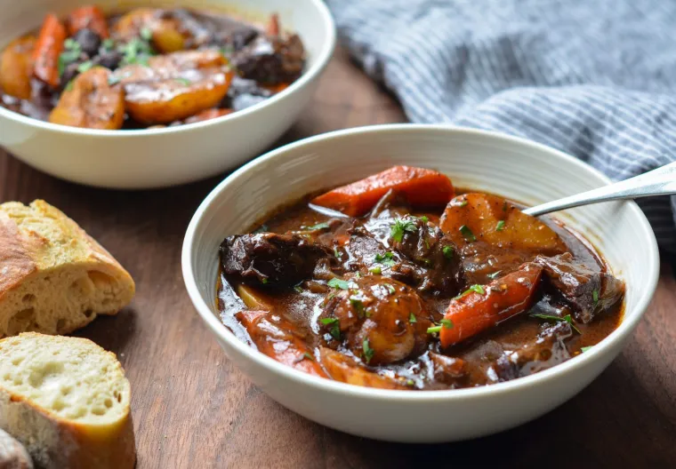

Beef Stew with Carrots & Potatoes
This classic French beef stew is the ultimate cold weather comfort
food. After a few hours in the oven, the meat becomes meltingly
tender and enveloped in a rich wine sauce.

- Servings: 6
- Total Time: 3 Hours 30 Minutes
Ingredients
- 3 pounds boneless beef chuck (well-marbled), cut into 1-1/2-inch pieces 2 teaspoons salt
- 1 teaspoon freshly ground black pepper
- 3 tablespoons olive oil
- 2 medium yellow onions, cut into 1-inch chunks 7 cloves garlic, peeled and smashed
- 2 tablespoons balsamic vinegar
- 1-1/2 tablespoons tomato paste
- 1/4 cup all-purpose flour 2 cups dry red wine
- 2 cups beef broth
- 2 cups water
- 1 bay leaf
- 1/2 teaspoon dried thyme
- 1-1/2 teaspoons sugar
- 4 large carrots, peeled and cut into one-inch chunks on a diagonal
- 1 pound small white boiling potatoes (baby yukons), cut in half
- Fresh chopped parsley, for serving (optional)
Ingredients
- Preheat the oven to 325°F and set a rack in the lower middle position.
- Pat the beef dry and season with the salt and pepper. In a large Dutch oven or heavy soup pot, heat 1 tablespoon of the olive oil over medium-high heat until hot and shimmering. Brown the meat in 3 batches, turning with tongs, for about 5 minutes per batch; add one tablespoon more oil for each batch. (To sear the meat properly, do not crowd the pan and let the meat develop a nice brown crust before turning with tongs.) Transfer the meat to a large plate and set aside.
- Add the onions, garlic and balsamic vinegar; cook, stirring with a wooden spoon and scraping the brown bits from bottom of the pan, for about 5 minutes. Add the tomato paste and cook for a minute more. Add the beef with its juices back to the pan and sprinkle with the flour. Stir with wooden spoon until the flour is dissolved, 1 to 2 minutes. Add the wine, beef broth, water, bay leaf, thyme, and sugar. Stir with a wooden spoon to loosen any brown bits from the bottom of the pan and bring to a boil. Cover the pot with a lid, transfer to the preheated oven, and braise for 2 hours.